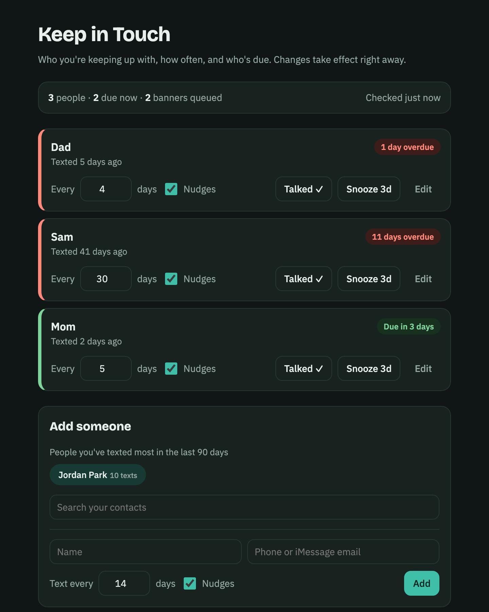

Keep in Touch reads your real iMessage history on your Mac and sends a banner to your iPhone when it's been a while since you texted someone. Text them and the reminder disappears on its own.
On your Mac, open Terminal (press ⌘ Space, type Terminal, press Return), paste this, and press Return:
curl -fsSL https://raw.githubusercontent.com/wadeowen1234/keep-in-touch/main/install.sh | bash
Press Return again when it asks about a channel. Your browser then opens a setup page that walks you through the rest: scan a QR code with your iPhone, allow access to Messages, and pick your people. Run the same command later to update; your settings are kept.
Choose from the people you text most and set how often for each: Dad every 4 days, a friend from home every 30.
On the day, a banner shows up on your iPhone. Tap it to open a text. If you still haven't texted 2 days later, you get a louder nudge.
Your Mac sees the text (from your phone or Mac), cancels pending banners, and restarts the timer. No checking things off.

Signed in to iMessage, with Messages in iCloud turned on so texts from your phone show up. It needs to be on (or wake up) now and then. iPhone apps can't read your messages, which is why the Mac does the work.
The free ntfy app delivers the banners. No account needed. The setup page shows a QR code that walks you through it.